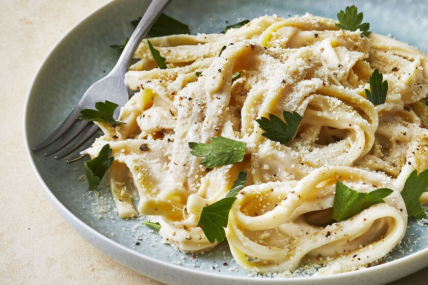

Fettuccine Alfredo

Fettuccine Alfredo is tender pasta in a luscious cream sauce
with garlic and fresh parmesan cheese.
A classic Italian-American favorite,
alfredo pasta is easy to make at home
with simple ingredients.
This rich and creamy fettuccine Alfredo
recipe is easy enough for beginner cooks,
but it's impressive enough for company.
-
24 ounces dry fettuccine pasta.
-
1 cup butter.
-
¾ pint heavy cream.
-
salt and pepper to taste.
-
1 dash garlic salt.
-
¾ cup grated Romano cheese.
-
½ cup grated Parmesan cheese.
-
Bring a large pot of lightly salted water to a boil.
Add fettuccine and cook for 8 to
10 minutes or until al dente; drain.
-
Melt butter into cream in a large saucepan over low heat;
add salt, pepper,
and garlic salt. Increase the heat to medium;
stir in grated Romano and Parmesan cheese until
melted and sauce has thickened.
-
Add cooked pasta to sauce and toss until
thoroughly coated; serve immediately.